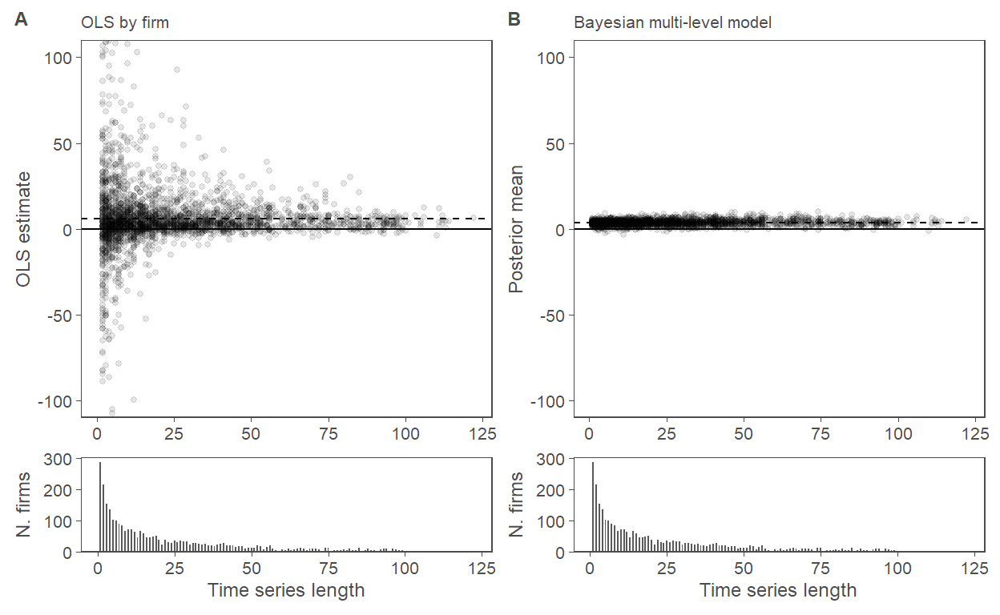
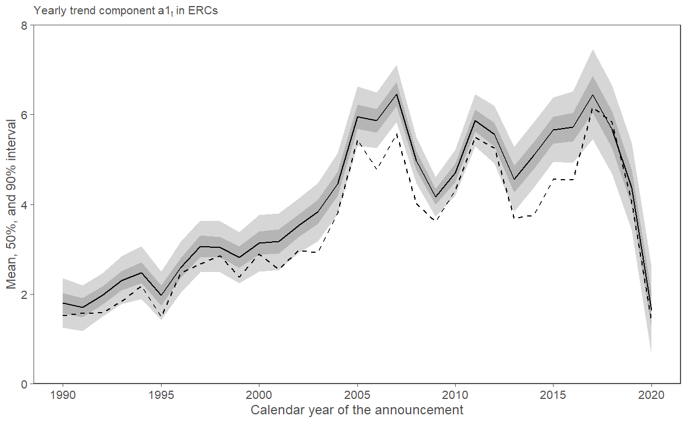
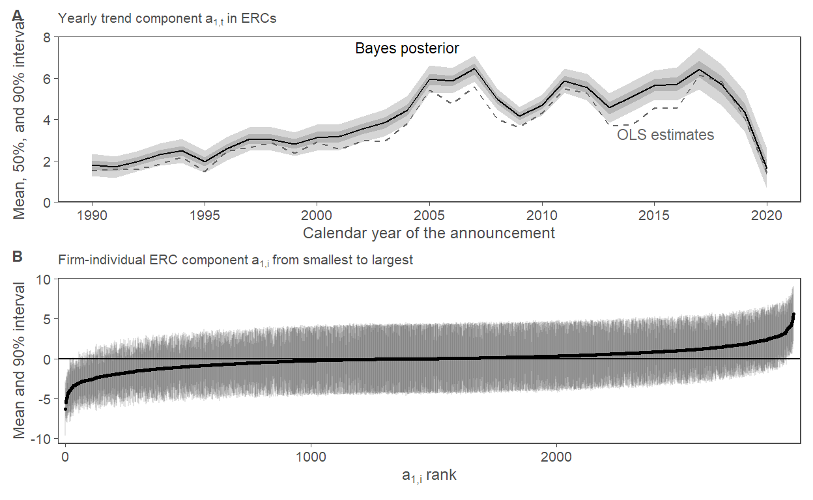

Part one of the code for Section 3: Heterogeneity in earnings response coefficients
library(tidyverse)
library(cmdstanr)
library(posterior)
library(patchwork)
source("00-utils.R")
kable <- knitr::kable
theme_set(theme_prodgray())
ols_erc <- function(.d){
fit <- lm(ret_dm ~ earn_surp_dm, data = .d)
fit_results <- broom::tidy(fit)
}
ols_pred <- function(.d){
fit <- lm(ret_dm ~ earn_surp_dm, data = .d)
fit_pred <- broom::augment(fit)
}
This markdown file contains all the code necessary to replicate the main figures, models and results used in Section 3: Heterogeneity in earnings response coefficients of the Paper What Can Bayesian Inference Do for Accounting Research?. The prior predictive checks and the cross-validation test are on separate pages. All the code can also be found in the repo. It contains 00-utils.R which contains a few helper functions for graphs and tables.
Note: I used the newer cmdstanr package instead of the older rstan package because it likely is the future of the R based Stan ecosystem. I also really like its api, which is very close to the api of the pystan package. An additional advantage (I hope) is thus that most model fitting code should be more or less directly transferable to pystan for those that want to work in python. Installing cmdstanr used to be tricky at times because one needs a working c++ toolchain. But it is much smoother now. Please see the cmdstanr doc for installation instructions
The data used here is generated via the 02-create-ERC-sample.R script found in the repo. Here, we just load it and do some last minute transformations like de-meaning, etc.
ea_data <- arrow::read_parquet("../data/ea-event-returns.pqt")
ea_data <-
ea_data |>
mutate(
ret_dm = AbEvRet - mean(AbEvRet),
earn_surp_dm = earn_surp - mean(earn_surp)
)
head(ea_data) |>
kable()
| ticker | permno | fpend_date | ea_date | actual_eps | median_fcast_eps | num_forecasts | two_days_bef_ea | Price | earn_surp | ea_match_date | AbEvRet | firm_id | ret_dm | earn_surp_dm |
|---|---|---|---|---|---|---|---|---|---|---|---|---|---|---|
| 001N | 14504 | 2014-12-31 | 2015-02-09 | 0.04 | 0.030 | 3 | 2015-02-05 | 14.49 | 0.0006901 | 2015-02-09 | -0.2428478 | 1 | -0.2472159 | 0.0006950 |
| 001N | 14504 | 2015-03-31 | 2015-05-05 | 0.06 | -0.045 | 4 | 2015-05-01 | 12.42 | 0.0084541 | 2015-05-05 | -0.0452097 | 1 | -0.0495779 | 0.0084589 |
| 001N | 14504 | 2015-06-30 | 2015-08-05 | 0.02 | -0.015 | 4 | 2015-08-03 | 9.25 | 0.0037838 | 2015-08-05 | 0.0469699 | 1 | 0.0426018 | 0.0037886 |
| 001N | 14504 | 2015-09-30 | 2015-11-04 | -0.02 | 0.040 | 5 | 2015-11-02 | 5.82 | -0.0103093 | 2015-11-04 | 0.0769411 | 1 | 0.0725729 | -0.0103044 |
| 002T | 14503 | 2014-06-30 | 2014-08-07 | 0.19 | 0.235 | 4 | 2014-08-05 | 33.33 | -0.0013501 | 2014-08-07 | -0.0166244 | 2 | -0.0209926 | -0.0013453 |
| 002T | 14503 | 2014-09-30 | 2014-11-04 | 0.18 | 0.340 | 5 | 2014-10-31 | 30.43 | -0.0052580 | 2014-11-04 | -0.0211484 | 2 | -0.0255165 | -0.0052531 |
ea_data_time <-
ea_data |>
mutate(EAYear = lubridate::year(ea_date)) |>
mutate(year_id = as.integer(EAYear - min(EAYear) + 1))
desc_tabl <- rbind(
desc_row(ea_data$AbEvRet, "Ret"),
desc_row(ea_data$earn_surp, "X")
)
desc_tabl$N <- nrow(ea_data)
desc_tabl$Firms <- max(ea_data$firm_id)
write_csv(desc_tabl, "../out/results/tab1-panA.csv")
desc_tabl|>
mutate(across(where(is.numeric), round, 4)) |>
kable()
| var | mean | sd | q5 | q25 | q50 | q75 | q95 | N | Firms | |
|---|---|---|---|---|---|---|---|---|---|---|
| 5% | Ret | 0.0044 | 0.0779 | -0.1252 | -0.0394 | 0.0027 | 0.0470 | 0.1392 | 67360 | 2966 |
| 5%1 | X | 0.0000 | 0.0044 | -0.0075 | -0.0005 | 0.0003 | 0.0014 | 0.0056 | 67360 | 2966 |
Just to have a frame of reference, here is the pooled ERC estimate
pooled <- ols_erc(ea_data)
kable(pooled)
| term | estimate | std.error | statistic | p.value |
|---|---|---|---|---|
| (Intercept) | 0.000000 | 0.0002955 | 0.00000 | 1 |
| earn_surp_dm | 3.116373 | 0.0665200 | 46.84867 | 0 |
Next, we nest the data by firm (ticker) and fit OLS ERC models by firm
nested_data <-
ea_data %>%
add_count(ticker, name = "n_EAs") %>%
nest(data = -c(ticker, n_EAs, firm_id)) %>%
mutate(ols_result = map(.x = data, .f = ~ols_erc(.)))
summary(nested_data$n_EAs)
Min. 1st Qu. Median Mean 3rd Qu. Max.
1.00 4.00 13.00 22.71 33.00 122.00 This is the distribution of firm-level ERC estimates
summary(ols_results$estimate)
Min. 1st Qu. Median Mean 3rd Qu. Max. NA's
-5034.136 0.068 3.884 6.041 10.650 5462.750 294 This is for the comparison in Figure 5.
byyear_data <-
ea_data_time %>%
nest(data = -c(year_id, EAYear)) %>%
mutate(ols_result = map(.x = data, .f = ~ols_erc(.)))
byyear_results <-
byyear_data %>%
select(-data) %>%
unnest(ols_result) %>%
filter(term == "earn_surp_dm")
To fit a Bayesian model I use Stan, or, more precisely, its R bindings in cmdstanr. To fit a Bayesian model, we need to:
The model itself is coded in the Stan language. There are many excellent tutorials on Stan available online. So I won’t waste space explaining it here. For various reasons (e.g., debugging) it is customary to put the model code in a separate .stan file. All the model files can be found in the /Stan/ folder of the repo.
cat(read_lines("../Stan/erc-wkinfo-priors.stan"), sep = "\n")
data{
int<lower=1> N; // num obs
int<lower=1> J; // num groups
int<lower=1> K; // num coefficients
int<lower=1, upper=J> GroupID[N]; // GroupID for obs, e.g. FirmID or Industry-YearID
vector[N] y; // Response
matrix[N, K] x; // Predictors (incl. Intercept)
}
parameters{
matrix[K, J] z; // standard normal sampler
cholesky_factor_corr[K] L_Omega; // hypprior coefficient correlation
vector<lower=0>[K] tau; // hypprior coefficient scales
vector[K] mu_b; // hypprior mean coefficients
real<lower=0> sigma; // error-term scale
}
transformed parameters{
matrix[J, K] b; // coefficient vector
// The multivariate non-centered version:
b = (rep_matrix(mu_b, J) + diag_pre_multiply(tau,L_Omega) * z)';
}
model{
to_vector(z) ~ normal(0, 1);
L_Omega ~ lkj_corr_cholesky(2);
mu_b[1] ~ normal(0, 0.1);
mu_b[2] ~ normal(0, 40);
sigma ~ exponential(1.0 / 0.08); // exp: 0.08 (std (abnormal returns))
tau[1] ~ exponential(1.0 / 0.1); // exp: 0.1
tau[2] ~ exponential(1.0 / 40); // exp: 40
y ~ normal(rows_dot_product(b[GroupID] , x), sigma);
}
// generated quantities {
// array[N] real y_pred = normal_rng(rows_dot_product(b[GroupID] , x), sigma);
// }Next, we compile the model to an .exe file
model_wkinfo_priors <- cmdstan_model("../Stan/erc-wkinfo-priors.stan")
Now, we prepare the list of data to feed into the model.
input_data <- list(
N = nrow(ea_data),
J = max(ea_data$firm_id),
K = 2,
GroupID = ea_data$firm_id,
y = ea_data$AbEvRet,
x = as.matrix(data.frame(int = 1, esurp = ea_data$earn_surp))
)
We run the model
Beware, this fit can take a long time
fit_wkinfo_priors <- model_wkinfo_priors$sample(
data = input_data,
iter_sampling = 1000,
iter_warmup = 1000,
chains = 4,
parallel_chains = 4,
seed = 1234,
refresh = 1000
)
Running MCMC with 4 parallel chains...
Chain 1 Iteration: 1 / 2000 [ 0%] (Warmup)
Chain 2 Iteration: 1 / 2000 [ 0%] (Warmup)
Chain 3 Iteration: 1 / 2000 [ 0%] (Warmup)
Chain 4 Iteration: 1 / 2000 [ 0%] (Warmup)
Chain 1 Iteration: 1000 / 2000 [ 50%] (Warmup)
Chain 1 Iteration: 1001 / 2000 [ 50%] (Sampling)
Chain 4 Iteration: 1000 / 2000 [ 50%] (Warmup)
Chain 4 Iteration: 1001 / 2000 [ 50%] (Sampling)
Chain 2 Iteration: 1000 / 2000 [ 50%] (Warmup)
Chain 2 Iteration: 1001 / 2000 [ 50%] (Sampling)
Chain 3 Iteration: 1000 / 2000 [ 50%] (Warmup)
Chain 3 Iteration: 1001 / 2000 [ 50%] (Sampling)
Chain 3 Iteration: 2000 / 2000 [100%] (Sampling)
Chain 3 finished in 1941.6 seconds.
Chain 4 Iteration: 2000 / 2000 [100%] (Sampling)
Chain 4 finished in 1962.7 seconds.
Chain 1 Iteration: 2000 / 2000 [100%] (Sampling)
Chain 1 finished in 2088.8 seconds.
Chain 2 Iteration: 2000 / 2000 [100%] (Sampling)
Chain 2 finished in 2132.0 seconds.
All 4 chains finished successfully.
Mean chain execution time: 2031.3 seconds.
Total execution time: 2132.6 seconds.Here is the summary of the resulting posterior distribution of the model parameters
fit_wkinfo_priors$summary(variables = c("mu_b", "sigma", "tau", "L_Omega[2,1]")) |>
mutate(across(where(is.numeric), round, 3)) |>
kable()
| variable | mean | median | sd | mad | q5 | q95 | rhat | ess_bulk | ess_tail |
|---|---|---|---|---|---|---|---|---|---|
| mu_b[1] | 0.004 | 0.004 | 0.000 | 0.000 | 0.003 | 0.004 | 1.000 | 3943.605 | 3333.804 |
| mu_b[2] | 3.669 | 3.668 | 0.107 | 0.108 | 3.490 | 3.850 | 1.001 | 2575.785 | 2404.202 |
| sigma | 0.076 | 0.076 | 0.000 | 0.000 | 0.075 | 0.076 | 1.003 | 4585.697 | 2582.434 |
| tau[1] | 0.006 | 0.006 | 0.001 | 0.001 | 0.005 | 0.007 | 1.000 | 1037.872 | 2015.912 |
| tau[2] | 2.804 | 2.802 | 0.125 | 0.125 | 2.600 | 3.008 | 1.002 | 1347.643 | 2243.416 |
| L_Omega[2,1] | -0.020 | -0.024 | 0.088 | 0.086 | -0.161 | 0.130 | 1.011 | 276.749 | 683.598 |
To do this we need to extract the posterior draws for the ERC coefficients
posterior_b <- summarise_draws(fit_wkinfo_priors$draws(c("b")),
posterior_mean = mean,
posterior_sd = sd,
~quantile2(., probs = c(0.05, 0.25, 0.75, 0.95))
)
write_csv(posterior_b, "../out/results/fit_wkinfo_bi.csv")
posterior_erc <-
posterior_b |>
filter(str_detect(variable, ",2\\]"))
Code for Tab. 1, Panel C
tab1.C <-
rbind(
desc_row(posterior_erc$posterior_mean, "post_mean"),
desc_row(with(posterior_erc, q95 - q5), "post90_width"),
desc_row(with(ols_results, estimate[is.na(estimate) == FALSE]), "OLS"),
desc_row(with(ols_results, p.value[is.na(p.value) == FALSE]), "OLS pval")
)
write_csv(tab1.C, "../out/results/tab1-panC.csv")
tab1.C |>
mutate(across(where(is.numeric), round, 3))
var mean sd q5 q25 q50 q75 q95
5% post_mean 3.672 1.414 1.292 2.970 3.676 4.288 6.105
5%1 post90_width 7.837 1.440 4.946 6.933 8.314 9.013 9.345
5%2 OLS 6.041 178.593 -18.689 0.068 3.884 10.650 45.904
5%3 OLS pval 0.362 0.309 0.002 0.068 0.301 0.611 0.927graph_data <-
ols_results %>%
mutate(
post_mean = posterior_erc$posterior_mean,
post_sd = posterior_erc$posterior_sd
)
y_range <- c(-100, 100)
f4.panA <-
graph_data %>%
ggplot(aes(x = n_EAs, y = estimate)) +
geom_point(alpha = 0.1, size = 1) + # , width = 0.25) +
geom_hline(yintercept = c(0)) +
geom_hline(yintercept = mean(graph_data$estimate, na.rm = TRUE), linetype = "dashed") +
labs(
y = "OLS estimate",
x = NULL, # "Nr of Quarters in firm's time series",
subtitle = "OLS by firm"
) +
coord_cartesian(ylim = y_range)
f4.panB <-
graph_data %>%
ggplot(aes(x = n_EAs, y = post_mean)) +
geom_point(alpha = 0.1, size = 1) + # , width = 0.25) +
geom_hline(yintercept = c(0)) +
geom_hline(yintercept = mean(graph_data$post_mean), linetype = "dashed") +
labs(
y = "Posterior mean",
x = NULL,
subtitle = "Bayesian multi-level model"
) +
coord_cartesian(ylim = y_range)
f4.panC <-
graph_data %>%
ggplot(aes(x = n_EAs)) +
geom_bar(width = 0.5) +
scale_y_continuous(expand = expansion(mult = c(0, 0.05))) +
labs(
x = "Time series length",
y = "N. firms"
)
fig4 <-
f4.panA + f4.panB + f4.panC + f4.panC +
plot_layout(ncol = 2, heights = c(2, 0.5)) +
plot_annotation(tag_levels = list(c("A", "B", NULL, NULL))) &
theme(legend.position = "none")
fig4

Saving figure
save_fig(fig4, figname = "fig4", w = 6.2, h = 3.4)
cat(read_lines("../Stan/erc-wkinfo-priors-time-pers.stan"), sep = "\n")
data{
int<lower=1> N; // num obs
int<lower=1> J; // num groups
int<lower=1> K; // num coefficients
int<lower=1> M; // num periods
int<lower=1, upper=J> GroupID[N]; // GroupID for obs, e.g. FirmID or Industry-YearID
int<lower=1, upper=M> TimeID[N]; // GroupID for obs, e.g. FirmID or Industry-YearID
vector[N] y; // Response
vector[N] x; // Predictor (without Intercept)
}
parameters{
matrix[K, J] z; // standard normal sampler
cholesky_factor_corr[K] L_Omega; // hypprior coefficient correlation
vector<lower=0>[K] tau; // hypprior coefficient scales
real<lower=0> sigma; // error-term scale
real mu_0;
real<lower=0,upper=1> rho_raw; // used to construct rho, the AR(1) coefficient
real<lower=0> sig_t; // error-term scale
vector[M] z_t;
}
transformed parameters{
matrix[J, K] b_i; // firm-level components
vector[K] mu_b; // hypprior mean firm-level coefficients
// The multivariate non-centered version:
mu_b[1] = mu_0;
mu_b[2] = 0;
b_i = (rep_matrix(mu_b, J) + diag_pre_multiply(tau,L_Omega) * z)';
// non-centered parameterization of AR(1) process priors
real rho = 2 * rho_raw - 1; // ensures that rho is between -1 and 1
vector[M] b_t = sig_t * z_t; // all of them share this term
b_t[1] /= sqrt(1 - rho^2); // mo[1] = mo[1] / sqrt(1 - rho^2)
for (m in 2:M) {
b_t[m] += rho * b_t[m-1]; // mo[m] = mo[m] + rho * mo[m-1];
}
}
model{
to_vector(z) ~ normal(0, 1);
z_t ~ normal(0, 1);
L_Omega ~ lkj_corr_cholesky(2);
mu_0 ~ normal(0, 0.1);
rho_raw ~ beta(10, 5);
sigma ~ exponential(1.0 / 0.08); // exp: 0.08 (std (abnormal returns))
tau[1] ~ exponential(1.0 / 0.1); // exp: 0.1
tau[2] ~ exponential(1.0 / 40); // exp: 40
sig_t ~ exponential(1.0 / 40); // exp: 40
vector[N] n_loc = b_i[GroupID, 1] + (b_t[TimeID] + b_i[GroupID, 2]) .* x;
y ~ normal(n_loc, sigma);
}model_wkinfo_timepers <- cmdstan_model("../Stan/erc-wkinfo-priors-time-pers.stan")
Again beware, this fit can take a long time
fit_wkinfo_timepers <- model_wkinfo_timepers$sample(
data = input_data2,
iter_sampling = 1000,
iter_warmup = 1000,
chains = 4,
parallel_chains = 4,
seed = 1234,
refresh = 1000
)
Running MCMC with 4 parallel chains...
Chain 2 Iteration: 1 / 2000 [ 0%] (Warmup)
Chain 4 Iteration: 1 / 2000 [ 0%] (Warmup)
Chain 1 Iteration: 1 / 2000 [ 0%] (Warmup)
Chain 3 Iteration: 1 / 2000 [ 0%] (Warmup)
Chain 3 Iteration: 1000 / 2000 [ 50%] (Warmup)
Chain 3 Iteration: 1001 / 2000 [ 50%] (Sampling)
Chain 2 Iteration: 1000 / 2000 [ 50%] (Warmup)
Chain 2 Iteration: 1001 / 2000 [ 50%] (Sampling)
Chain 1 Iteration: 1000 / 2000 [ 50%] (Warmup)
Chain 1 Iteration: 1001 / 2000 [ 50%] (Sampling)
Chain 4 Iteration: 1000 / 2000 [ 50%] (Warmup)
Chain 4 Iteration: 1001 / 2000 [ 50%] (Sampling)
Chain 3 Iteration: 2000 / 2000 [100%] (Sampling)
Chain 3 finished in 2301.3 seconds.
Chain 1 Iteration: 2000 / 2000 [100%] (Sampling)
Chain 1 finished in 2386.3 seconds.
Chain 2 Iteration: 2000 / 2000 [100%] (Sampling)
Chain 2 finished in 2400.0 seconds.
Chain 4 Iteration: 2000 / 2000 [100%] (Sampling)
Chain 4 finished in 2537.5 seconds.
All 4 chains finished successfully.
Mean chain execution time: 2406.3 seconds.
Total execution time: 2538.0 seconds.Here is the summary of the resulting posterior distribution of the model parameters
fit_wkinfo_timepers$summary(variables = c("mu_b[1]", "sigma", "tau", "b_t",
"rho", "sig_t", "L_Omega[2,1]")) |>
mutate(across(where(is.numeric), round, 3)) |>
kable()
| variable | mean | median | sd | mad | q5 | q95 | rhat | ess_bulk | ess_tail |
|---|---|---|---|---|---|---|---|---|---|
| mu_b[1] | 0.003 | 0.003 | 0.000 | 0.000 | 0.003 | 0.004 | 1.004 | 4608.601 | 3102.494 |
| sigma | 0.075 | 0.075 | 0.000 | 0.000 | 0.075 | 0.076 | 1.000 | 3703.130 | 2184.654 |
| tau[1] | 0.006 | 0.006 | 0.001 | 0.001 | 0.005 | 0.007 | 1.001 | 1072.303 | 1881.667 |
| tau[2] | 2.615 | 2.612 | 0.122 | 0.118 | 2.419 | 2.821 | 1.005 | 1547.561 | 2254.383 |
| b_t[1] | 1.798 | 1.794 | 0.335 | 0.335 | 1.254 | 2.349 | 1.000 | 6564.086 | 3714.573 |
| b_t[2] | 1.699 | 1.701 | 0.310 | 0.319 | 1.183 | 2.198 | 1.000 | 5728.963 | 3821.598 |
| b_t[3] | 1.967 | 1.971 | 0.299 | 0.298 | 1.491 | 2.462 | 1.000 | 6325.139 | 3566.423 |
| b_t[4] | 2.302 | 2.300 | 0.319 | 0.318 | 1.783 | 2.843 | 1.001 | 5648.104 | 3809.811 |
| b_t[5] | 2.479 | 2.488 | 0.353 | 0.344 | 1.891 | 3.061 | 1.001 | 6555.830 | 3578.803 |
| b_t[6] | 1.969 | 1.971 | 0.326 | 0.333 | 1.424 | 2.495 | 1.000 | 5906.941 | 3710.413 |
| b_t[7] | 2.581 | 2.577 | 0.341 | 0.330 | 2.021 | 3.159 | 1.000 | 5834.040 | 3507.401 |
| b_t[8] | 3.065 | 3.070 | 0.351 | 0.356 | 2.490 | 3.641 | 1.001 | 5946.883 | 3773.475 |
| b_t[9] | 3.043 | 3.039 | 0.346 | 0.336 | 2.482 | 3.622 | 1.000 | 6807.729 | 2933.874 |
| b_t[10] | 2.824 | 2.826 | 0.348 | 0.348 | 2.242 | 3.382 | 1.000 | 6918.646 | 3719.018 |
| b_t[11] | 3.135 | 3.140 | 0.384 | 0.381 | 2.503 | 3.762 | 1.000 | 7432.118 | 3579.078 |
| b_t[12] | 3.175 | 3.176 | 0.383 | 0.392 | 2.540 | 3.799 | 1.001 | 6264.057 | 3811.178 |
| b_t[13] | 3.523 | 3.525 | 0.368 | 0.370 | 2.914 | 4.133 | 0.999 | 6556.955 | 3728.211 |
| b_t[14] | 3.838 | 3.837 | 0.398 | 0.398 | 3.180 | 4.476 | 0.999 | 6121.546 | 3726.720 |
| b_t[15] | 4.461 | 4.459 | 0.409 | 0.406 | 3.788 | 5.148 | 1.000 | 6665.553 | 3867.688 |
| b_t[16] | 5.957 | 5.956 | 0.403 | 0.402 | 5.299 | 6.633 | 1.000 | 5896.254 | 3454.660 |
| b_t[17] | 5.868 | 5.873 | 0.382 | 0.391 | 5.255 | 6.487 | 1.000 | 5911.323 | 3872.781 |
| b_t[18] | 6.461 | 6.453 | 0.394 | 0.397 | 5.827 | 7.104 | 1.001 | 5171.089 | 3228.712 |
| b_t[19] | 4.977 | 4.976 | 0.311 | 0.312 | 4.472 | 5.495 | 1.000 | 5879.135 | 3677.540 |
| b_t[20] | 4.169 | 4.168 | 0.265 | 0.265 | 3.724 | 4.605 | 1.000 | 5316.392 | 3666.933 |
| b_t[21] | 4.704 | 4.693 | 0.310 | 0.307 | 4.197 | 5.218 | 1.002 | 6076.813 | 3584.917 |
| b_t[22] | 5.870 | 5.866 | 0.358 | 0.362 | 5.289 | 6.451 | 1.000 | 5298.588 | 3418.853 |
| b_t[23] | 5.561 | 5.566 | 0.389 | 0.392 | 4.917 | 6.199 | 1.002 | 6182.931 | 3860.695 |
| b_t[24] | 4.562 | 4.567 | 0.441 | 0.446 | 3.835 | 5.281 | 1.000 | 5299.736 | 3824.800 |
| b_t[25] | 5.096 | 5.094 | 0.442 | 0.442 | 4.377 | 5.835 | 1.001 | 5638.985 | 3851.835 |
| b_t[26] | 5.659 | 5.664 | 0.444 | 0.446 | 4.944 | 6.378 | 1.000 | 7011.250 | 3646.906 |
| b_t[27] | 5.719 | 5.716 | 0.488 | 0.479 | 4.920 | 6.516 | 1.002 | 6129.497 | 3780.013 |
| b_t[28] | 6.448 | 6.438 | 0.612 | 0.603 | 5.446 | 7.467 | 1.001 | 6038.999 | 3444.120 |
| b_t[29] | 5.667 | 5.654 | 0.604 | 0.610 | 4.678 | 6.646 | 1.001 | 5950.123 | 3377.044 |
| b_t[30] | 4.365 | 4.346 | 0.601 | 0.607 | 3.415 | 5.365 | 1.000 | 5965.089 | 3543.557 |
| b_t[31] | 1.624 | 1.622 | 0.600 | 0.591 | 0.644 | 2.604 | 1.000 | 4175.004 | 3838.545 |
| rho | 0.894 | 0.898 | 0.037 | 0.035 | 0.828 | 0.948 | 1.000 | 2739.444 | 2701.058 |
| sig_t | 1.077 | 1.057 | 0.196 | 0.185 | 0.794 | 1.430 | 1.001 | 1669.068 | 2703.365 |
| L_Omega[2,1] | 0.133 | 0.131 | 0.093 | 0.091 | -0.021 | 0.292 | 1.007 | 382.611 | 631.552 |
Saving output for Panel E of Tab. 1
posterior_b2 <- summarise_draws(fit_wkinfo_timepers$draws(c("b_i")),
posterior_mean = mean,
posterior_sd = sd,
~quantile2(., probs = c(0.05, 0.25, 0.75, 0.95))
)
posterior_erc2 <-
posterior_b2 |>
filter(str_detect(variable, ",2\\]"))
posterior_bt2 <- summarise_draws(fit_wkinfo_timepers$draws(c("b_t")),
posterior_mean = mean,
posterior_sd = sd,
~quantile2(., probs = c(0.05, 0.25, 0.75, 0.95))
)
write_csv(posterior_bt2, "../out/results/fit_wkinfo_time_bt.csv")
write_csv(posterior_b2, "../out/results/fit_wkinfo_time_bi.csv")
fit_comparison2 <-
rbind(
desc_row(posterior_erc2$posterior_mean, "post_mean"),
desc_row(with(posterior_erc2, q95 - q5), "post90_width"),
desc_row(with(ols_results, estimate[is.na(estimate) == FALSE]), "OLS")
)
write_csv(fit_comparison2, "../out/results/fit_comp-AR1.csv")
fit_comparison2 |>
mutate(across(where(is.numeric), round, 3)) |>
kable()
| var | mean | sd | q5 | q25 | q50 | q75 | q95 | |
|---|---|---|---|---|---|---|---|---|
| 5% | post_mean | 0.004 | 1.273 | -2.213 | -0.548 | 0.007 | 0.598 | 2.153 |
| 5%1 | post90_width | 7.410 | 1.259 | 4.847 | 6.664 | 7.835 | 8.413 | 8.733 |
| 5%2 | OLS | 6.041 | 178.593 | -18.689 | 0.068 | 3.884 | 10.650 | 45.904 |
Compare this to the numbers from the model without time trend
tab1.C |>
mutate(across(where(is.numeric), round, 3)) |>
kable()
| var | mean | sd | q5 | q25 | q50 | q75 | q95 | |
|---|---|---|---|---|---|---|---|---|
| 5% | post_mean | 3.672 | 1.414 | 1.292 | 2.970 | 3.676 | 4.288 | 6.105 |
| 5%1 | post90_width | 7.837 | 1.440 | 4.946 | 6.933 | 8.314 | 9.013 | 9.345 |
| 5%2 | OLS | 6.041 | 178.593 | -18.689 | 0.068 | 3.884 | 10.650 | 45.904 |
| 5%3 | OLS pval | 0.362 | 0.309 | 0.002 | 0.068 | 0.301 | 0.611 | 0.927 |
posterior_bt2 |>
mutate(Year = 1:nrow(posterior_bt2) + 1989) |>
left_join(select(byyear_results, Year = EAYear, OLS = estimate),
by = c("Year")) |>
ggplot(aes(x = Year)) +
geom_ribbon(aes(ymin = q5, ymax = q95), alpha = 0.2) +
geom_ribbon(aes(ymin = q25, ymax = q75), alpha = 0.2) +
geom_line(aes(y = posterior_mean)) +
geom_line(aes(y = OLS), linetype = 2) +
scale_x_continuous(breaks = seq(1990, 2020, 5)) +
scale_y_continuous(limits = c(0, 8), expand = expansion(mult = c(0, 0))) +
labs(subtitle = expression("Yearly trend component"~a1[t]~"in ERCs"),
y = "Mean, 50%, and 90% interval",
x = "Calendar year of the announcement")

f5.panA <-
posterior_bt2 |>
mutate(Year = 1:nrow(posterior_bt2) + 1989) |>
left_join(select(byyear_results, Year = EAYear, OLS = estimate),
by = c("Year")) |>
ggplot(aes(x = Year)) +
geom_ribbon(aes(ymin = q5, ymax = q95), alpha = 0.2) +
geom_ribbon(aes(ymin = q25, ymax = q75), alpha = 0.2) +
geom_line(aes(y = posterior_mean)) +
geom_line(aes(y = OLS), linetype = 2, color = "grey40") +
scale_x_continuous(breaks = seq(1990, 2020, 5)) +
scale_y_continuous(limits = c(0, 8), expand = expansion(mult = c(0, 0))) +
labs(subtitle = expression("Yearly trend component"~a[1*","*t]~"in ERCs"),
y = "Mean, 50%, and 90% interval",
x = "Calendar year of the announcement") +
annotate("text", label = "OLS estimates", x = 2015.5, y = 3.3, size = 3, color = "grey40") +
annotate("text", label = "Bayes posterior", x = 2004, y = 7.5, size = 3)
f5.panB <-
posterior_erc2 |>
mutate(rank = rank(posterior_mean)) |>
ggplot(aes(x = rank, y = posterior_mean)) +
geom_hline(yintercept = 0) +
geom_linerange(aes(ymin = q5, ymax = q95), alpha = 0.1) +
geom_point(size = 0.5) +
scale_x_continuous(expand = expansion(mult = c(0.01, 0.01))) +
labs(y = "Mean and 90% interval",
x = expression(a[1*","*i]~"rank"),
subtitle = expression("Firm-individual ERC component"~a[1*","*i]~"from smallest to largest"))
fig5 <-
f5.panA / f5.panB +
plot_annotation(tag_levels = "A") &
theme(legend.position = "none")
fig5

Saving figure
save_fig(fig5, figname = "fig5", w = 6.2, h = 5)
If you see mistakes or want to suggest changes, please create an issue on the source repository.
Text and figures are licensed under Creative Commons Attribution CC BY 4.0. Source code is available at https://github.com/hschuett/BayesForAccountingResearch, unless otherwise noted. The figures that have been reused from other sources don't fall under this license and can be recognized by a note in their caption: "Figure from ...".